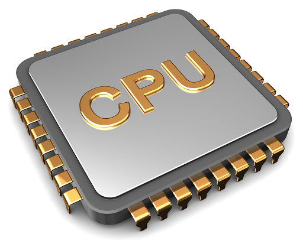
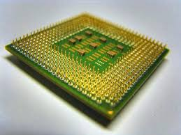
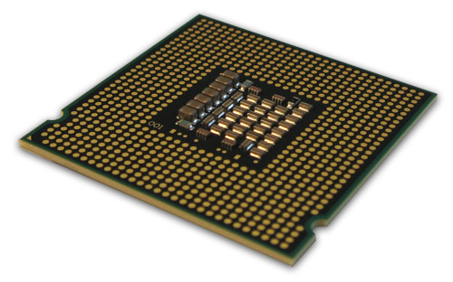

|  |  |  |
Il processore è un'unità di elaborazione dati di un
calcolatore ( computer ). La parola processore deriva
dall'inglese "to process" ( eseguire un'azione ).
Il processore consente di eseguire un'operazione o una serie di operazioni in sequenza.
Processori Multi-Core: Processori con più core (Nuclei) che lavorano in contemporanea
<--INDIETRO